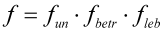

|
|
|


载荷系数耐久计算
如有必要，平均应力和应力幅值可以乘以载荷系数。由于 DIN 743 标准不包含此系数，通常应将其预定义为 1.0。如果在轴计算中指定公称转矩时未考虑轴旋转时振动引起的扭矩增大，则使用大于 1 的系数是一个好主意。
如果在自由截面中指定力或功率额定值，则不使用载荷系数。
按照 Hänchen 的计算，包括以下信息：
根据 Hänchen [64] 第 24 页的总载荷系数 f：
 | (25.9) |
fun | 最大载荷的不确定性（1.0 或 1.2 至 1.4） |
fbetr | 运行系数（冲击）（1.0 至 3.0） |
fleb | 零件的重要性（1.0 或 1.2 至 1.5） |
注意：
Hänchen 方法只使用一个载荷系数，即弯曲和扭转所输入的两个值中较大的一个。
Load factor endurance calculation
If necessary, the mean stresses and the stress amplitudes can be multiplied by a load factor. As the DIN 743 standard does not include this factor, you should generally predefine it as 1.0. Using a factor > 1 is a good idea if you specify the nominal torque in a shaft calculation without taking into account the increases in torque due to the vibrations caused when the shaft rotates.
The load factor is not used if the forces or power ratings are specified in free cross sections.
The calculation according to Hänchen includes the following information:
The total load factor f according to Hänchen [64], p. 24:
(25.9) |
fun | Uncertainty in maximum load (1.0 or 1.2 to 1.4) |
fbetr | Operational approach (shocks) (1.0 to 3.0) |
fleb | Importance of part (1.0 or 1.2 to 1.5) |
Note:
The Hänchen method uses only one load factor, which is the larger of the two values entered for bending and torsion.